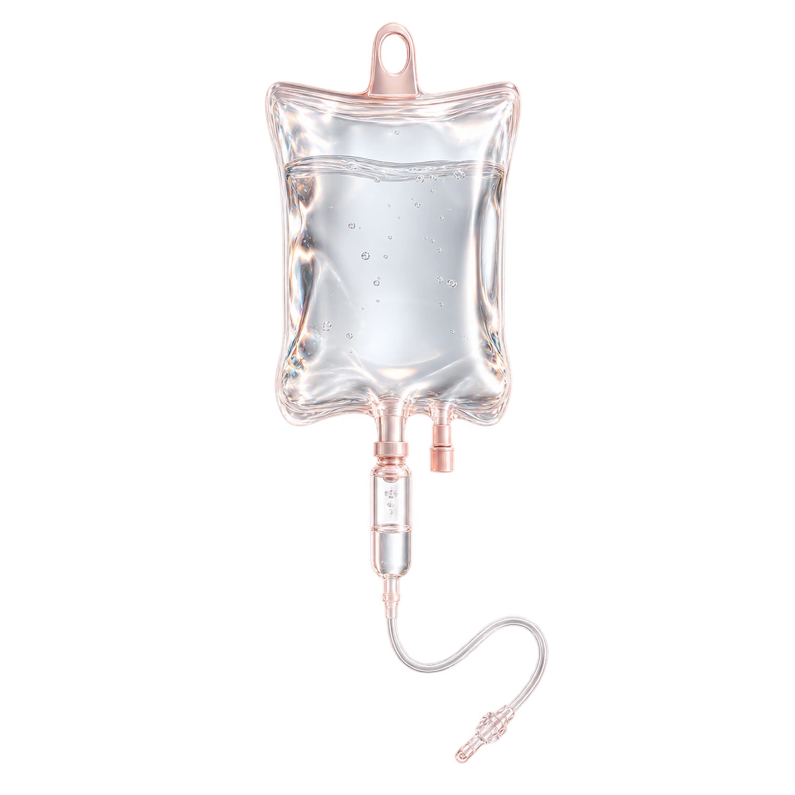
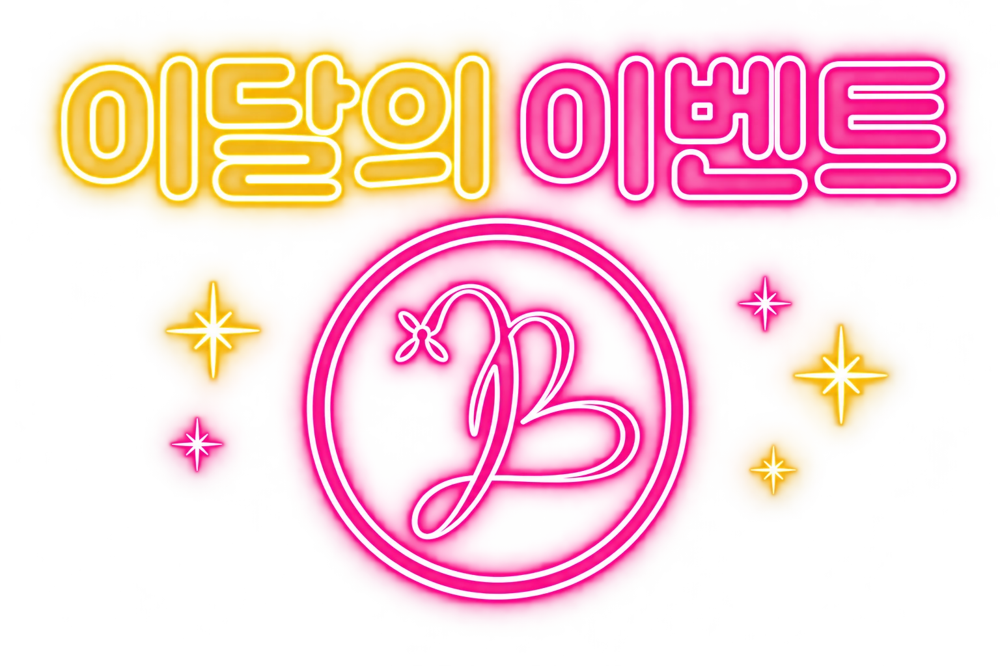

쉽게 지치는 일상이 고민이라면
피로의 기간, 수면과 식사, 생활 패턴을 함께 이야기해 주세요. 지속되는 피로는 원인 확인이 먼저입니다.
Cinderella injection
신데렐라주사는 알파리포산을 중심으로 하는 주사요법을 일컫는 이름입니다.
알파리포산은 티옥트산이라고도 불리며, 에너지 대사와 항산화 과정에 관여하는 성분입니다.
몸의 상태와 복용 중인 약을 함께 확인하고, 나에게 필요한 관리인지 상담부터 시작합니다.
시술 구성과 투여 방법은 진료 후 안내합니다.

Your condition, first.
피로의 기간, 수면과 식사, 생활 패턴을 함께 이야기해 주세요. 지속되는 피로는 원인 확인이 먼저입니다.
원하는 관리 목적과 현재의 건강 상태를 확인하고, 기대할 수 있는 변화와 한계를 안내합니다.
기존 주사 반응, 알레르기와 복용약을 확인한 후 시술 가능 여부를 상담합니다.
Alpha-lipoic acid
성분이 하는 일과
나에게 필요한 관리를 함께 살펴봅니다.
알파리포산은 산화·환원 과정에 관여하는 성분입니다. 항산화 특성을 바탕으로 상담하되, 특정 질환 예방이나 피부 변화의 효과를 보장하지는 않습니다.
알파리포산은 세포가 에너지를 만드는 과정에 관여합니다. 성분의 역할만으로 피로의 원인을 판단할 수는 없으므로 생활습관과 건강 상태를 함께 확인합니다.
Care, step by step.
관리 목적, 복용약, 알레르기와 기저질환을 확인합니다.
상담 결과에 따라 제제와 용량, 투여 방법을 안내합니다.
투여 중 불편감을 살피고, 시술 후 상태와 관리 방법을 확인합니다.
복용 중인 약·영양제, 알레르기, 임신·수유 여부를 알려주세요. 당뇨병 치료제를 사용하는 경우에는 혈당 변화 가능성을 함께 확인합니다.
주사 부위의 통증·멍·붉어짐이나 메스꺼움 등이 나타날 수 있습니다. 시술 중이나 이후 평소와 다른 불편감이 있으면 의료진에게 바로 알려주세요.
Questions, answered.
알파리포산(티옥트산) 성분의 주사요법을 일컫는 이름입니다. 알파리포산은 에너지 대사와 항산화 과정에 관여하는 성분으로 알려져 있습니다. 상담에서 건강 상태와 치료 목적을 확인한 후 시술 여부를 결정합니다.
알파리포산은 체내 에너지 대사에 관여하는 물질로, 항산화 특성에 대해서도 연구되어 왔습니다. 성분의 특성과 주사 시술의 실제 효과는 구분해서 살펴야 하며, 기대할 수 있는 변화는 개인의 상태에 따라 다릅니다.
피로는 수면, 생활습관, 영양 상태나 질환 등 다양한 원인으로 나타날 수 있습니다. 피로가 오래 지속되거나 평소와 다른 증상이 있다면 원인을 먼저 평가해야 합니다. 상담 후 본인에게 적합한 관리 방법을 안내합니다.
즉각적인 피부 미백이나 체중 감소를 보장하는 시술은 아닙니다. 피부색이나 체중을 바꾸는 목적만으로 기대하기보다, 상담에서 시술의 목적과 한계를 확인하는 것이 좋습니다.
투여하는 제제와 용량, 주입 속도, 개인의 건강 상태에 따라 달라집니다. 정해진 횟수를 일괄 적용하기보다 상담 후 일정과 경과를 고려해 안내합니다.
복용 중인 약과 영양제, 알레르기, 기저질환을 모두 알려주세요. 특히 당뇨병 치료제를 사용하는 경우 혈당 변화 가능성을 함께 확인해야 합니다. 임신·수유 중이거나 임신을 계획 중인 경우에도 사전에 말씀해 주세요.
시술 후 상태를 확인한 뒤 일상생활로 복귀할 수 있습니다. 주사 부위에 일시적인 통증이나 멍, 붉어짐 등이 나타날 수 있으며, 불편감이 지속되거나 심해지면 의료진에게 알려주세요.
주입 부위의 통증이나 붓기, 메스꺼움, 어지러움, 식은땀 등 평소와 다른 느낌이 있다면 바로 의료진에게 알려주세요. 호흡곤란이나 전신 두드러기 같은 증상이 나타나면 즉시 의료진의 도움을 받아야 합니다.

나에게 맞는 이벤트를 펼쳐보세요.

A moment for yourself.
홍대·합정 뷰티블라썸의원
현재 컨디션과 복용 중인 약을 함께 알려주세요.